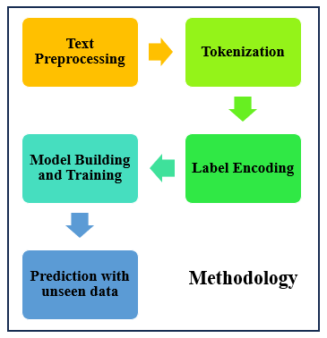
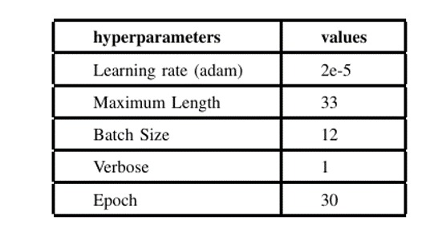
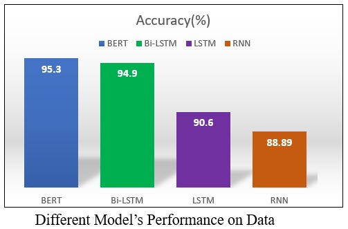
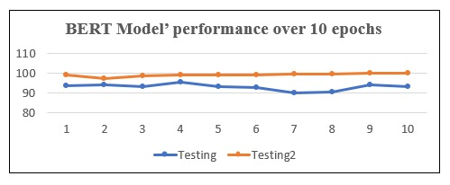

Objective
The aim this project was to conduct a comprehensive analysis of customer sentiments in Amazon magazine reviews, focusing on classifying sentiments as positive, negative, or neutral and evaluating the performance of various Natural Language Processing (NLP) models. The study was driven by the goal of identifying the most effective and accurate approach for sentiment classification, which holds significant implications for understanding customer feedback at scale.
Methodology
The methodology adopted for this project involved several critical steps, starting with data preprocessing (dataset was obtained from Kaggle). This included cleaning the raw data to remove noise, tokenizing the text into meaningful units, and encoding sentiment labels into numerical formats. After pre-processing, multiple NLP models (BERT, Bi-LSTM, LSTM, and RNN) were trained using fine-tuned hyperparameters, with a focus on optimizing their performance for the sentiment classification task.

Result
The results of the performance evaluation on test data highlighted the superiority of the BERT model over other approaches such as Bi-LSTM, LSTM, and RNN. BERT not only achieved higher accuracy but also exhibited remarkable consistency across ten epochs of training, underscoring its robustness and reliability in handling complex sentiment classification tasks.

The findings of this study underscore the value of BERT as a state-of-the-art NLP model for sentiment analysis, providing both accuracy and reliability in extracting insights from textual data. Additionally, the methodology employed offers a scalable and practical framework that can be adapted for sentiment analysis across diverse domains. This has significant implications for businesses seeking to interpret customer opinions efficiently, enabling data-driven decision-making to improve products, services, and overall customer satisfaction.